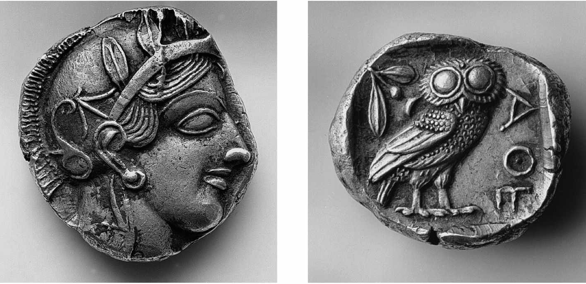
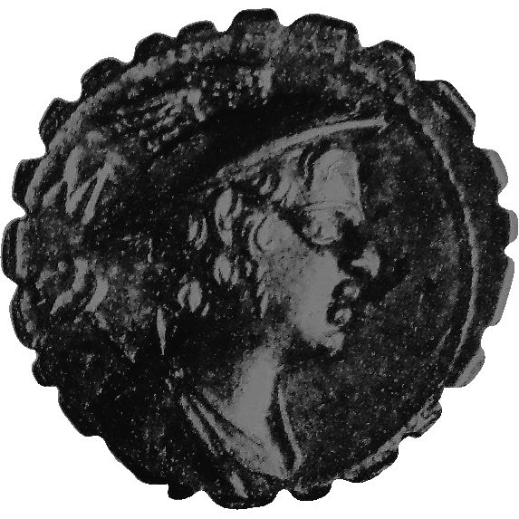

地区间主要的物质联结是商业性的，尽管并不全然如此。这是一个不仅货物流通各地，而且也是身怀技艺、携带植物的人们四处漂移的时期。当时，交换的范围有多广阔，可由以下事实来表明。在这一时期里，印度最先种养的棉花、甘蔗和鸡传播到了中国和西欧。中国在这些世纪里第一次获得了葡萄藤、苜蓿、细香葱、黄瓜、无花果、芝麻、石榴树和胡桃树；作为报答，中国人将自己的橘树、桃树、梨树、牡丹、杜鹃花、山茶和菊花传给了欧亚其他地区。与此同时，技术方面也发生了相似的交流。水车这一重大发明的传播情况就是一个明显的例子。西亚的第一部水车是在本都国王米思里代蒂统治期内诞生的，约于公元前65年前后安装在黑海南岸；中国的第一部水车是其后不久、约公元前30年制造的。这两个日期靠得太近了，水车无论是从西亚直接传到中国，还是从中国直接传到西亚，都是不可能的，而只能是由它们之间某一未为人知的中间发源地传往两地。欧亚各地区的这种相互影响，是古典时代这些世纪里地方贸易和长途贸易全面繁盛的结果。
贸易的进行主要是通过穿越欧亚大陆中部的陆路和环绕欧亚大陆边缘的海路。这两条总的路线绝不相互排斥，也不相互独立。大部分货物的运输既靠陆路，也靠海路；通常是埃及和印度之间取道海路，印度和中国之间取道几条陆路中的某一条。此外，各条陆路和海路均处于相互竞争的状态；如果走某一条路线费用太高，或者极不安全，那么，通常就会使贸易转向其他路线。

图29 这是一枚雅典人用的面值4个德拉克马（drachm，古希腊货币单位）的银币，铸于公元前5世纪（约公元前440——前430年）。正面（左边图像）是雅典娜女神的头像，背面（右边图像）是女神智慧标志——猫头鹰。铸造这些货币所用的银子主要产自阿提卡南部索尼昂的国有银矿。
海上贸易早在古代文明时期便已进行。埃及商人大胆地顺着红海航行到东非，沿着地中海东部海岸航行至黎巴嫩。同样，苏美尔商人顺着波斯湾、沿阿拉伯半岛航行，而印度河流域的商人则以至今尚不清楚的某些方法，努力向西行进，直到和前者建立联系，其地点可能是波斯湾的巴林群岛。但是，所有这些早期航海者与克里特岛上那些既能在陆上、又能在水上生活的米诺斯人相比，仅仅是一些外行水手。米诺斯人是古代伟大的海上贸易者，他们往来于地中海两端，成为这一内海至高无上的主人。
随着亚该亚人和多利安人的入侵，这一范围广泛的贸易活动逐渐停止，地中海东部的人们退回到了自给自足的小农生活中。最早恢复克里特岛人的贸易活动的是腓尼基人。这个操闪语、沿地中海东部狭窄的海岸平原定居下来的民族，很快发展起繁盛的中介贸易。他们向东来的商队大宗买进没药、香料和美索不达米亚的各种工艺品，从海外国家进口各种金属、兽皮、谷物、橄榄油和奴隶；而他们自己则制作精致的家具、珠宝饰物、金属器皿和纺织品运销外地。其中纺织品占主要地位，是用他们自己畜养的羊身上的毛织成的，并用从沿岸海生介壳动物中提取的负有盛名的紫红染料加以染色。
在发展贸易的过程中，腓尼基人逐渐制造出一种由好几排水手划桨的船。这种船速度快，适于越来越向西推进的远航。公元前11世纪，他们开始向爱琴海外扩展，到公元前9世纪末，他们已进入地中海西部，并在非洲西北岸、西班牙南岸、西西里岛、马耳他岛和巴利阿里群岛，建立起商业据点和殖民地。他们甚至还大胆地越过直布罗陀海峡，远航到英格兰的康沃尔，因为那里盛产他们一心追求的锡。
从约公元前11世纪到公元前8世纪后期，腓尼基的水手和商人控制了地中海海上贸易的大部分。从那以后，希腊人在人口压力的刺激下，以竞争者的面目出现了。他们首先设立贸易站；土地资源适宜的贸易站，后来发展成为农业移居地。尽管殖民者仍采用母邦的制度和宗教实践，但这些移居地相当程度上并不受后者的控制。因而，希腊殖民扩张的结果，是产生了大量独立的城邦，而不是一个中央集权的大一统帝国。
希腊的一个主要移居地是在西西里岛和意大利南部，那里建有许多殖民地，以致这一地区后来被称为“大希腊”。在大陆上，希腊人向北推进，远到那不勒斯，在那里，他们和来自小亚细亚的移民伊特鲁斯坎人建立了联系。在地中海西部，希腊人在西班牙东北部和法国南部建立了牢固的根据地，马西利亚（马赛）是他们在那里的主要殖民地。最后，希腊人发现黑海地区是一块自由地，刚进入那里时，他们曾为寒冷、多雾的气候所阻挡，但最终还是大批地定居下来，因为在那里经济上可获得很好的机会：黑海本身提供了每年一度成群洄游的金枪鱼；此外，希腊人用自己制造的货物，可向居住在相当于今日俄国南部的土著西徐亚人交换到各种原料。到公元前5世纪，整个黑海流域已为繁荣的希腊贸易站和移居地所环绕。
当希腊人在海上一帆风顺时，波斯人正在营建最后从尼罗河流域一直扩展到印度河流域的庞大帝国。虽然波斯人原居山区，对海上的事一窍不通，但为了促进其东部省区和西部省区之间的交往，对开辟航线的事仍很关心。他们利用其臣民中有航海经验的腓尼基人和小亚细亚的希腊人来达到这一目的。他们曾派一个叫作希拉克斯的希腊水手率领一支探险队，于约公元前510年从印度河起航，驶往位于红海入口处的阿尔西诺。波斯人还计划从尼罗河到红海开一条运河，似乎还为这一计划的实现做了相当多的工作。在这种情况下，贸易大大地繁荣起来，无论贸易额还是贸易活动的地理范围，都超过了已知的过去。希腊、腓尼基、阿拉伯和印度的水手们川流不息地往返于印度、波斯湾、埃及以及地中海的许多港口之间。
帝国创建者亚历山大大帝和他的继任者们延续着波斯人所开创的事业，方式是派遣更多的探险队，这又反过来促进了地理知识的增长。他们还在红海沿岸建造了一连串的港口，货物可以通过这些港口由陆路运送到尼罗河，再装船顺尼罗河运到亚历山大港。这一时期的印度洋贸易分两个阶段进行。首先，印度和阿拉伯商人从印度诸港口起航，紧靠海岸线西行到阿拉伯半岛；再西绕半岛，抵达目的地亚丁或穆哈。在那里，他们与希腊和埃及的商人相遇；后者用自己的货物交换前者的东方货物，再将东方货物经由红海沿岸诸港口运往亚历山大港。
所有这一切仅仅是东西方之间贸易大发展的序幕。这一大发展于公元前不久开始，约持续了两个世纪。贸易大发展的一个原因是中国对中亚的影响不断增长。中国人不仅打通了若干陆上商路，而且还使获取地区间贸易最重要的商品——丝织品——变得更为容易。中国在这方面所起的确切作用将在后面阐述陆上贸易时论及。贸易大发展的另一重要原因是，地括整个地中海区域以及欧洲中部和西北部大部分地区的罗马帝国的统治得到了加强，出现了所谓的“罗马治下和平”时期；在这一时期里，过去一直阻碍贸易的土匪和海盗行径已绝迹，关税壁垒也几乎全都消除。此外，帝国的富庶也促进了贸易的发展，特别是由于富裕的罗马统治阶级喜爱奇特的外国货，又有钱购置。
因此，罗马人与所有邻近地区——北面的斯堪的纳维亚、莱茵河对岸的日耳曼、多瑙河对岸的达契亚和撒哈拉沙漠以南的非洲——的贸易都很兴旺。这对欧亚地区产生了广泛的影响，不过，影响最为重大的，还是和东方的贸易交往。东西方贸易关系的迅速发展，与公元前1世纪某希腊水手的发现分不开。他发现，季风可用来加快轮船来回横越印度洋的速度（这很可能是一个重新发现，因为阿拉伯水手似乎早在希腊人之前便已知道这一情况。季风一词就是从阿拉伯人的季节一词派生来的）。每年10月至来年4月，东北季风即冬季风从印度吹向东非，6月至9月，西南季风即夏季风以相反风向从东非吹向印度。现在，水手们可以顺风直接横渡大洋了，再也无须花费很多时间紧靠宽阔、弧形的海岸航行。一个商人从罗马旅行到印度，包括陆上穿越埃及的时间，只需16个星期就够了。
“罗马”商人多半是希腊人和叙利亚人，他们不仅进行这样的旅行，有些人还永久地在印度各城市定居下来；这已为印度的文献资料所证实。“罗马”商人随身携带的主要是金币，此外还有玻璃、铜、锡、亚麻布和羊毛织品等，用来换取胡椒及其他香料、棉纺织品、宝石和他们最需要的、经由陆上丝绸之路运至印度诸港口的中国丝织品。有几个更富有冒险精神的“罗马”商人，还进一步东越印度，于公元2世纪和3世纪到达缅甸、马来亚、苏门答腊，然后经马六甲海峡抵达河内，进而终于和中国取得了直接联系。

图30 公元前1世纪的罗马货币。
就陆上贸易而论，其盛衰的情况在很大程度上取决于社会秩序和治安的维护状况。当大部分陆路处于某种权力强有力的控制下时，贸易就繁荣；反之，当社会一片混乱时，贸易就衰萎。这一模式，只要观察一下这些世纪中贸易的发展趋势便可明白。由于技术进步以及文明和帝国扩大，显然，总的趋势是贸易量上升。不过，在这一总趋势中，也时有升降波动，这与当时的政治状况有关。例如，在欧亚西部的西徐亚帝国、欧亚东部的中国诸朝代和囊括欧亚大部分陆地的蒙古帝国统治下的那些世纪中，由于帝国强大，商路安全有保障，贸易便获得迅速发展。
比如说，西徐亚人就与希腊人在黑海北岸的一些城邦有着充满活力的贸易往来。西徐亚人用奴隶、牛、兽皮、毛皮、鱼、木材、蜂蜡和蜂蜜去交换希腊人的纺织品、酒、橄榄油和各种奢侈品。同样，中国人沿着从中国西北部经中亚直达黑海和黎凡特诸港口的著名的丝绸之路，来回贩运各种商品。中国主要出口丝织品，也出口肉桂、大黄和优质铁。作为回报，中国也得到了各种物产，如来自中亚的毛皮、毛织品、玉石和牲畜，来自波罗的海的琥珀，以及来自罗马诸省的玻璃、珊瑚、珍珠、亚麻布、羊毛织品和黄金，其中黄金占首位。
公元2世纪以后，随着罗马帝国和中国社会动乱迭起，这一繁盛的陆上贸易渐渐衰弱。7世纪时，穆斯林阿拉伯人征服整个中东，随后，又扩张到中亚，给了陆上贸易以巨大打击。在阿拉伯人于751年的怛罗斯战役击败了唐朝军队之后，整个中亚都皈依了伊斯兰教。巨大的伊斯兰帝国此时成了中国和西方之间，以及中国和印度之间的障碍，而不是桥梁。最后，随着陆上道路的关闭，贸易转移到大陆周围正开始由阿拉伯水手和商人控制的海上。直到13世纪蒙古人征服从太平洋到波罗的海和黑海的整个欧亚大陆，才有了重新打开陆路，从而为中世纪的马可·波罗及其同行商人扫清道路的可能。
综上所述，尽管贸易方向发生过各种转变，但有一基本事实始终未变；这就是古典时代与早先的古代时期大为不同，其贸易范围大为扩大，贸易额巨幅增长。不管是在地中海、阿拉伯海，还是在欧亚大草原的某些地带，其贸易范围都不再限于单个地区，而是随着货物经由海陆两路从欧亚大陆的一端运送到另一端而愈来愈成为跨地区的。